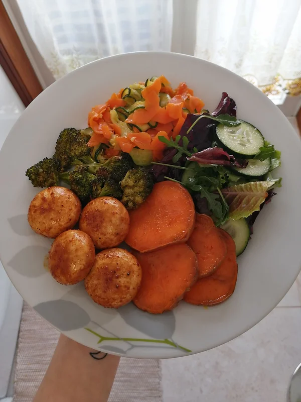

Noodles de Cenoura e Courgette
Tempo de preparação
10min
Horas de Cozimento
20min
Tempo Total
30min
Porções
2

Ingredientes
Noodles de cenoura e courgette:
- 1 cenoura grande espiralizada
- ½ courgette espiralizada
- 1 alho picado
- sal q.b
- azeite q.b
Batata doce assada no forno:
- 1 batata doce cortada ás rodelas
- sal q.b
- azeite q.b
- ½ folha de loureiro
Brócolo assado no forno:
- 3 floretes grandes de brócolo cortado em pedaços mais pequenos
- sal q.b
- azeite q.b
Cogumelos salteados:
- 8 cogumelos brancos inteiros
- pimenta preta q.b
- alho em pó q.b
- pimentão doce q.b
- molho de soja q.b
- azeite q.b
Instruções
Noodles de cenoura e courgette:
- Numa sertã antiaderente salteie os noodles de cenoura e courgette, num fio de azeite, com o alho e tempere com sal.
Batata doce assada no forno:
- Num tabuleiro disponha as rodelas de batata doce, tempere com sal, um fio de azeite e a folha de loureiro. Asse por 5-10 minutos de cada lado.
Brócolo assado no forno:
- Num outro tabuleiro coloque os pequenos floretes de brócolo e tempere com sal e azeite. Asse por 15-20min, ao mesmo tempo que a batata doce, e vá virando para não queimar.
Cogumelos salteados:
- Numa sertã anti aderente coloque os cogumelos,tempere com pimenta preta, alho em pó, pimentão doce e frite com um fio de azeite durante 5 minutos. Coloque o molho de soja por cima para salgar e dar gosto, e frite até os cogumelos aparentarem estar totalmente cozidos.
- Num prato junte os noodles de cenoura e courgette, a batata doce e o brócolo assados, os cogumelos salteados e uma mistura de alfaces, rúcula e pepino temperada com sal, azeite e vinagre de sidra!